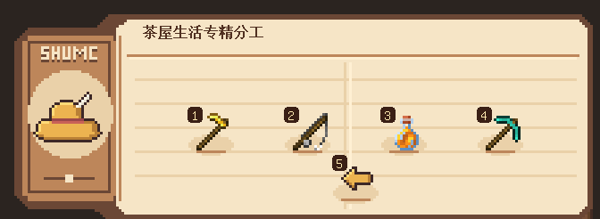
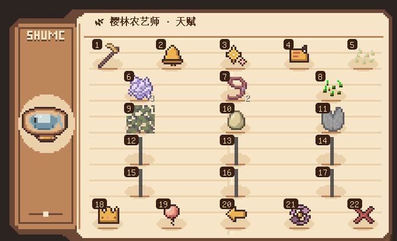
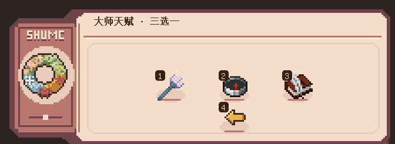
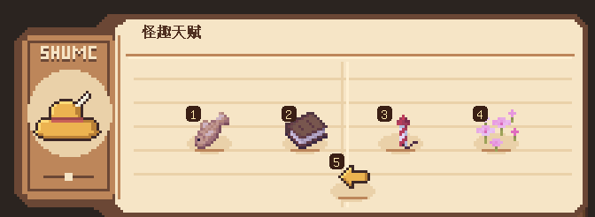

职业专精与天赋
四门生活专精：做本行的事涨等级、点天赋、解锁主动技能和称号
四大专精
/job（别名 /专精、/职业）选择主修专精。左键主修（之后 7 天不能换），右键查看任意专精的天赋树。每个专精的等级各自存档，换专精不会清空进度，但只有当前主修的加成和天赋生效。
| 专精 | 基础加成 | 专属特产 | 主动技能（Lv5） |
|---|---|---|---|
| 🌿 樱林农艺师 | 农作物出货 +20%、牧场出货 +15%、牧场好感 +25% | 收获时 35% 掉【晨露茶芽】 | 🌸 樱雨（手拿锄头） |
| 🎣 星露垂钓客 | 星级鱼出货 +20%、昆虫出货 +15%、捕虫网冷却 -0.5 秒 | 钓鱼 30% 捞【鲜润鱼露】 | 🫧 撒窝（手拿钓竿） |
| 🍵 茶屋酿造师 | 工坊高星 +15%、15% 双倍；3D 灶台提速 20%、大餐多摆 1 份 | —（升华时可用三种特产） | 🫖 开壶（手拿玻璃瓶 / 蜂蜜瓶） |
| ⛏ 灵脉探矿匠 | 矿物副产物与工具耐久更省 | 挖矿 25% 伴生【茶具星砂】 | 🔔 听脉（手拿镐） |
专精特产是锻造饰品、私房配方、主厨委托的材料，详见 工坊 · 料理 · 锻造。


等级与经验
| 项目 | 规则 |
|---|---|
| 等级 | Lv1–20，每个专精各自存档 |
| 升级经验 | 从当前等级升 1 级需要 120 + 60 × 当前等级，满级累计 13,680 |
| 每日经验 | 每天前 600 全额，之后减半（防挂机）；普通玩家约 3–4 周满级 |
| 天赋点 | 每升 1 级 +1 点，共 19 点；一棵树约 22–24 点，点不满，要取舍 |
| 洗点 | 每周免费 1 次，之后 800 茶屋币；大师天赋一起重选 |
经验从哪来（只算当前主修）
| 专精 | 来源 | 经验 |
|---|---|---|
| 🌿 农艺师 | 收获作物 | 1 + 星级 |
| 喂牧场饲料 / 抚摸 / 喂自家作物零食 | 6 / 4 / 2 | |
| 🎣 垂钓客 | 钓到鱼 | 2 + 星级 |
| 捕到虫 | 2 + 星级 | |
| 🍵 酿造师 | 收取工坊成品 | 6 + 3 × 品质 |
| 摆出大餐 / 干杯 | 25 / 5 | |
| ⛏ 探矿匠 | 挖天然矿（钻石、绿宝石为 6） | 2 |
| 敲晶洞 / 精炼 / 淬火升星 | 6 / 4 / 15 |
突破任务
到 Lv5 / 10 / 15 / 20 时经验会存满停住，完成突破任务后在天赋页点「完成突破」才能继续升级，全服会响一声专精钟。任务可以提前做。
| 专精 | Lv5 | Lv10 | Lv15 | Lv20 |
|---|---|---|---|---|
| 农艺师 | 交自家田里的星级小麦 / 胡萝卜 / 马铃薯 / 甜菜根 / 地狱疣各 32（星级可混交） | 同一季节 3 种当季特色作物各收获一次金星以上 | 一只牧场动物满 5 心并用命名牌起名 | 累计收获 30 份 👑4 星作物 |
| 垂钓客 | 3 种不同水域各钓一条金星以上的鱼 | 昆虫图鉴 10 种 | 雨夜钓到 👑4 星鱼 | 钓到传说鱼 |
| 酿造师 | 工坊做出 6 种不同成品 | 和 3 位不同玩家干杯 | 做出一份 👑 大师品质 | 升华时三种专精特产都用过 |
| 探矿匠 | 敲开 10 个晶洞 | Y<0 各挖到钻石矿、绿宝石矿、金矿 | 一件装备淬火到 3 星 | 开出 3 个铱金晶洞 |
主动技能
Lv5 解锁。手拿本职工具，潜行 + 按 F 释放，或在天赋页点按钮。（没拿本职工具时，潜行 + F 是打开主菜单。）
| 技能 | 效果 | 冷却 |
|---|---|---|
| 🌸 樱雨（锄头） | 身边 6 格的作物立刻长一阶段（只对你能建造的地方生效），头顶飘樱花雨 16 秒 | 10 分钟 |
| 🫧 撒窝（钓竿） | 对准 12 格内的水面撒鱼饭，60 秒内那片水（6 格）咬钩快一半、品质 +5 | 8 分钟 |
| 🫖 开壶（玻璃瓶 / 蜂蜜瓶） | 工坊里剩余时间最长的那份成品立刻做好 | 15 分钟 |
| 🔔 听脉（镐） | 告诉你附近 16 格有几块好矿（钻石 / 绿宝石 / 金 / 远古残骸）、最近的大概多远（不透视、不给坐标） | 10 分钟 |
天赋树
点自己的专精进入天赋树。每个专精 3 条线 × 4 层，第 2 / 3 / 4 层需要这棵树已经点了 3 / 7 / 12 点。括号里是该天赋的最高级数。


🌿 农艺师
| 层 | 🌾 丰收线 | 🐮 牧场线 | 🍂 四季线 |
|---|---|---|---|
| 1 | 沃土之手（3）收获 5/10/15% 多一份 | 温柔抚摸（3）好感 +10/20/30% | 省种（2）播种 10/20% 不耗种子 |
| 2 | 晨露采摘（2）茶芽 +5/10% | 满篮产物（2）喂饲料 8/16% 产两份 | 听雨（1）雨天收获品质 +8 |
| 3 | 金穗（1）黄金大丰收 +4% | 好胃口（1）消化冷却 -30% | 节气农法（2）当季 / 温室品质 +4/+8 |
| 4 | 巨型作物（2）特色作物 1/2% 长成巨型 | 动物友情（2）抚摸满心动物 15/30% 送礼物 | 节气种子（1）每季领一包当季种子 ×8 |
🎣 垂钓客
| 层 | 🐟 鱼获线 | 🧰 宝藏线 | 🦋 捕虫线 |
|---|---|---|---|
| 1 | 稳竿（3）咬钩等待 -5/10/15% | 海底寻宝（3）漂流宝箱 +2/4/6% | 轻网（2）捕虫冷却 -0.3/0.6 秒 |
| 2 | 升星手感（2）4/8% 直接 +1 星 | 漂流信使（1）钓鱼 3% 捞到玩家漂流瓶 | 眼尖（2）捕虫命中 +4/8% |
| 3 | 传说嗅觉（1）传说鱼咬钩时浮漂金光 | 潮汐直觉（2）雨天 / 夜晚品质 +3/+6 | 标本师（2）昆虫出货 +5/10% |
| 4 | 鱼露达人（2）鱼露 +5/10% | 锦鲤祈愿（1）每天前 3 条 👑 鱼各 +5 福气 | 萤火之夜（1）夜晚 15% 一网两只 |
🍵 酿造师
| 层 | ⭐ 品质线 | ⏱ 效率线 | 🍽 宴席线 |
|---|---|---|---|
| 1 | 文火慢煮（3）高星 +3/6/9% | 手脚麻利（3）制作时间 -5/10/15% | 大厨摆盘（2）大餐 +1 份；2 级时灶台再快 10% |
| 2 | 提香大师（1）提香 30% 不耗催化剂 | 扇风高手（1）扇风冷却 12→6 秒、升星 15→25% | 风味留香（2）喝自己做的饮品时长 +15/30% |
| 3 | 大师特调（2）👑 概率 +2/4% | 省料（2）8/16% 退回一件原料 | 茶话主持（1）干杯双方增益时长 ×1.5 |
| 4 | 意外之喜（1）2% 额外送「神秘特饮」 | 自动收取（1）做好自动进背包 | 外卖招牌（2）工坊成品出货 +5/10% |
⛏ 探矿匠
| 层 | ⛏ 矿脉线 | 💎 晶洞线 | ⚒ 锻造线 |
|---|---|---|---|
| 1 | 精准落镐（3）4/8/12% 多掉一份 | 晶洞嗅觉（3）晶洞 +2/4/6% | 精炼（2）10/20% 免工费 |
| 2 | 星砂伴生（2）星砂 +5/10% | 巧手鉴宝（2）铱金晶洞 +3/6% | 淬火手感（3）升星工费 -5/10/15% |
| 3 | 稳手（1）镐子耐久再省 20% | 盲盒连开（1）潜行右键一次敲 5 个 | 修补匠（1）修补免 20 币、铁锭 50% 不耗 |
| 4 | 深层老手（2）Y<0 挖到矿得 15 秒急迫 I/II | 宝石商人（2）晶洞茶屋币 +10/20% | 铭刻师（1）铭刻工费减半 |
大师天赋与怪趣天赋
👑 大师天赋（Lv20 突破后三选一）
| 专精 | 三个选项 |
|---|---|
| 农艺师 | 丰收之神（每天前 64 次收获数量翻倍）· 牧场主（喂料冷却减半、产物至少银星）· 四季使者（樱雨冷却 5 分钟、范围 12 格） |
| 垂钓客 | 海王（每天第一条鱼必定 👑4 星）· 寻宝人（宝箱 +4%、宝箱茶屋币翻倍）· 自然学家（鱼 + 虫图鉴每完成 10%，出货 +1%，最多 +10%） |
| 酿造师 | 私房配方（自选两种效果调「名字·私房特调」，每天 8 杯，可送可摆摊，不能 /sell）· 茶屋主理（喝你做的饮品时，5 格内朋友得一半时长）· 炼金小窝（每天前 3 次收取必出双份） |
| 探矿匠 | 灵脉罗盘（听脉 32 格并给 8 方向）· 铁匠宗师（升星 30% 不耗合金）· 晶石之心（每天第一个晶洞必为铱金） |
🎈 怪趣天赋（纯好玩，不影响收益）
Lv5 / 10 / 15 / 20 各解锁一个，可以单独开关。
| 专精 | Lv5 | Lv10 | Lv15 | Lv20 |
|---|---|---|---|---|
| 农艺师 | 花仙子：在能建造的草地上走，偶尔开小花 | 小鸡妈妈：小鸡跟着走 | 稻草人的朋友：右键戴南瓜的盔甲架聊农事 | 王牌菜农：拿锄头时头顶麦色光点 |
| 垂钓客 | 猫咪常客：钓鱼时猫凑过来 | 老渔夫的故事：空军时飘一句俗语 | 水花庆祝：👑 鱼放小烟花 | 蝴蝶相伴：白天花丛边头顶两只蝴蝶 |
| 酿造师 | 拉花：收取时头顶爱心 | 茶香体质：身边的人闻到茶香 | 试饮员：首次喝每种饮品写笔记 | 壶中日月：工坊做好吹哨提醒 |
| 探矿匠 | 矿工灯：Y<0 头顶暖光 | 矿坑金丝雀：附近有岩浆会叫 | 家传镐：镐子记挖了多少块，满一万刻「老伙计」 | 矿工吆喝：挖到钻石喊一声 |




专精称号
Lv10 / Lv20 自动获得，显示在聊天名字前，可以在天赋页隐藏：
- 农艺师：农艺好手 / 樱林大农
- 垂钓客：垂钓好手 / 星露钓仙
- 酿造师：酿造好手 / 茶屋主理人
- 探矿匠：探矿好手 / 灵脉宗师